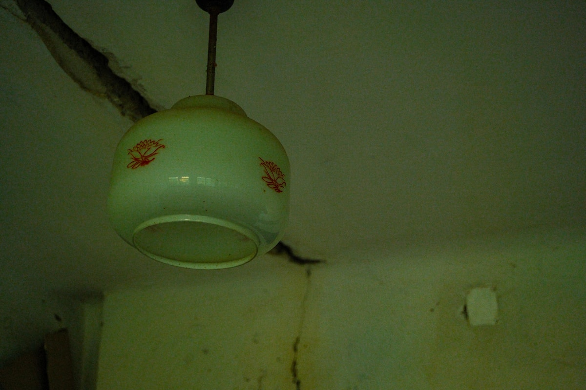

A sump pump that quits, a sewer that backs up, a pipe that lets go, rising river water, storm surge or a hard rain can each flood a property, and the damage should be handled by professionals without delay. In nearly every case the water falls into Category 2, known as gray water, or Category 3, known as black water, which means contaminants, bacteria and other hazards that are a real health risk. Day or night, 24/7, Castle Rock Restoration sends flood cleanup crews throughout Castle Rock to remove floodwater, sanitize the affected rooms and safely restore your home or building.
Cleanup opens with rapid extraction: truck-mounted units and submersible pumps that pull thousands of gallons an hour out of the building. After that, IICRC-certified technicians on our team measure how contaminated the area is, then sanitize it with antimicrobial products, HEPA-filtered air cleaning and targeted disinfection of all surfaces the water reached. Materials beyond saving, like contaminated drywall, damaged insulation and saturated carpet pad, are removed and disposed of the right way.
Then the drying begins: high-velocity air movers and commercial dehumidifiers of the LGR (low-grain refrigerant) type go in to pull moisture out of the building's structural parts. Our crew returns daily, using thermal imaging and calibrated meters to track moisture until the structure is completely dry and mold growth is prevented. Every stage of the job is recorded for your claim: photographs, detailed moisture maps, logs of the equipment used and the scope-of-work reports that insurance adjusters require.

Flood Cleanup Prevention Tips
A little prevention goes a long way in avoiding expensive restoration emergencies. Here are our expert recommendations:
- Regrade low spots so soil around the whole foundation falls away from the walls
- Have a backwater valve fitted to the sewer line so sewage cannot flow back inside
- Keep documents and keepsakes in watertight bins on shelves, not on a basement floor
- Keep gutters and storm drains clear of debris so water can flow properly
- In areas of the property that tend to flood, raise electrical systems and appliances off the floor
- Being outside a designated flood zone does not rule out flooding, so think about flood coverage
Flood Cleanup Issues? We Can Help.
Get a free estimate from our expert team today.
Call (978) 755-9769 TodayHow Our Flood Cleanup Works
We follow a proven process to ensure every job is completed to the highest standards. Here's what you can expect when you choose Castle Rock Restoration:
Emergency Dispatch
Call (978) 755-9769 24/7. We dispatch a flood crew carrying industrial pumps, protective gear and truck-mounted extractors so water removal can begin.
Water Removal & Debris Extraction
All standing water from the flood is pumped out with truck-mounted and submersible equipment. Our crew carefully clears waterlogged debris, damaged belongings and contaminated material, documenting it as we go.
Disinfecting and Antimicrobial Application
We treat every affected surface with an antimicrobial solution that is EPA-registered. HEPA air scrubbers remove airborne contaminants while we sanitize floors, walls and structural components.
Dry-Out, Daily Checks and Repairs
Industry standards set the drying target, and commercial-grade dehumidifiers plus air movers get the building there. Moisture is checked every day until the goals are reached, and then we finish any repairs and reconstruction needed.
Why Professional Flood Cleanup Matters
There is much more to a flood cleanup than removing the water you can see. The water brings sewage, chemicals, bacteria and more with it, and all of that is a serious hazard to health. Professional flood crews are trained in containment, personal protective equipment (PPE) and sanitizing protocols that keep your family from exposure to pathogens such as E. coli, hepatitis and other waterborne diseases.
Health is not the only issue: when cleanup is done wrong, moisture stays hidden and heavy mold can follow in a matter of days. Our technicians rely on psychrometric calculations, meter readings and thermal imaging to verify that each affected spot, from the framing to the subfloor to the inside of the walls, meets accepted drying standards. This scientific approach to drying is the only reliable way to prevent secondary damage that can cost thousands more to fix.
Flood Cleanup: DIY or Professional?
While some minor restoration tasks can be handled by handy homeowners, most water damage work requires professional expertise, specialized equipment, and proper safety training. Consider the following comparison:
| Factor | DIY Approach | Professional Service |
|---|---|---|
| Hidden Damage | Cannot assess structural or behind-wall damage | Hidden damage traced with meters and thermal imaging |
| Health Safety | Exposure to contaminated floodwater | Proper PPE, containment and sanitization |
| Contaminated Materials | Hard to remove and haul soaked materials | Unsalvageable materials removed and disposed of properly |
| Extraction Speed | Buckets and shop vacs take hours | Industrial pumps clear thousands of gallons an hour |
| Sanitization | Store cleaners cannot handle every contaminant | HEPA air filtration plus EPA-registered antimicrobials |
Not Sure What You Need?
Our experienced technicians can assess your situation and recommend the best solution.
Call (978) 755-9769 NowWhen to Call for Flood Cleanup in Castle Rock
Recognizing the warning signs early can save you time, money, and prevent significant damage to your property. Watch for these telltale signs that professional help is needed:
- Standing water anywhere on your property, whatever the source
- Water coming in through foundation cracks, window wells or door thresholds
- Roof or wall openings left by a storm, with rain pouring through
- Stains along baseboards and lower walls that mark the flood level
- Soaked landscaping that leaves water pooling against your foundation
- Heavy rainfall, a dead sump pump and water spreading across the basement
- A sewer or drain backup pushing contaminated water into living spaces
Early Action Saves Money
What seems like a minor issue today can turn into a major expense tomorrow. If you notice any of these signs, contact Castle Rock Restoration at (978) 755-9769 for a prompt evaluation.
Frequently Asked Questions About Flood Cleanup
Talk to a Flood Cleanup Expert
Don't let water damage problems get worse. Call Castle Rock Restoration now for prompt, professional service.
Get Help: (978) 755-9769